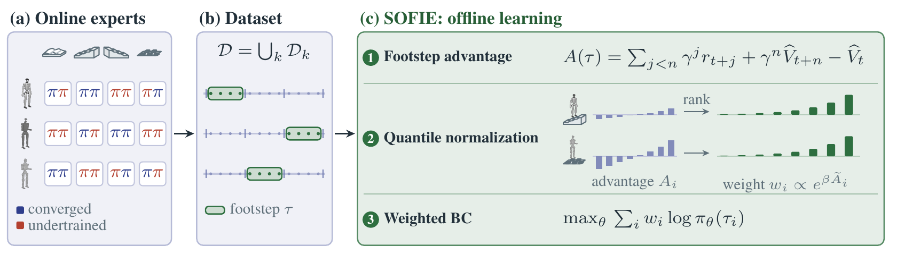
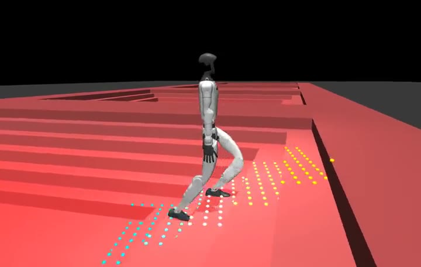

SOFIE · SEGMENT-LEVEL OFFLINE IMITATION OF DIVERSE EXPERTS
Pretraining Foundation Policies for Perceptive Humanoid Locomotion with Offline RL
TL;DR. SOFIE learns perceptive humanoid locomotion offline from rollouts where half the data comes from undertrained policies. It weights whole footsteps by their advantage, so one policy walks three humanoids over stepping stones, stairs and rough ground where behavior cloning copies the mistakes.
Abstract
Online reinforcement learning has enabled perceptive humanoids to traverse challenging terrain and to transfer these skills to real hardware. Scaling this paradigm across terrains and robot embodiments remains costly, because each new setting requires substantial environment interaction and careful tuning. Recent approaches train specialist policies online, then distill their rollouts offline into a more general policy through behavior cloning (BC). BC, however, ignores the recorded returns and imitates every behavior equally, which limits what it can learn from the rollouts of experts of varying quality. We study whether perceptive humanoid locomotion policies that span terrains and embodiments can be learned entirely from such offline data. To this end, we introduce SOFIE (Segment-level Offline Imitation of Diverse Experts), an offline reinforcement learning approach based on advantage-weighted regression that uses the recorded rewards to estimate footstep-level advantages and preferentially imitates the better footsteps. Quantile normalization of the advantages within each robot–terrain group keeps the resulting weights consistent across robots, terrains and reward scales. Across twelve humanoids in two simulators, SOFIE outperforms behavior cloning and offline reinforcement learning baselines with policies shared across robots or terrains, including one perceptive policy for three humanoids on four terrains. When fine-tuned on a small dataset from an unseen humanoid, a policy pretrained with SOFIE also outperforms training from scratch. These results suggest that perceptive foundation policies for humanoid locomotion can be pretrained from recorded rollouts alone, without further environment interaction.
Method
Experts trained online for each robot and terrain leave behind rollouts of mixed quality. SOFIE learns one policy from all of them offline, imitating the better footsteps more.

Mixed-quality rollouts
Each dataset mixes rollouts of a converged expert with rollouts of undertrained checkpoints of the same training run. Behavior cloning copies both.
Footstep-level advantages
Whether a step was good often shows only at the next touchdown, so SOFIE scores whole footsteps with a learned value and imitates the better ones more.
Quantile normalization
Advantages are ranked within each robot–terrain group, so the weights stay comparable across robots, terrains and reward scales.

What the policy sees
Besides its own joint states, the policy reads a height scan: 187 downward rays on a 1.6 m × 1.0 m grid, 10 cm apart, centred under the pelvis and turning with the robot. Every video on this page draws each ray hit as a dot, coloured continuously by its height relative to the ground under the robot, up to ±25 cm.
Results
Three ways to share one policy across the same twelve robot–terrain pairs: G1, H1 and M3 on stepping stones, stairs up, stairs down and rough ground. Scores are normalized per pair: 0 is the undertrained checkpoint that recorded the pair’s weaker rollouts, 1 is its converged expert.
| Setting | BC | IQL | GC-IQL | TD3+BC | SOFIE |
|---|---|---|---|---|---|
| One policy for three humanoids on four terrains | 0.184.3 falls | 0.284.0 falls | – | – | 0.682.2 falls |
| One policy per terrain | 0.344.3 falls | 0.304.8 falls | 0.324.4 falls | 0.325.6 falls | 0.742.1 falls |
| One policy per robot | 0.384.2 falls | 0.503.7 falls | 0.443.4 falls | 0.563.3 falls | 0.772.1 falls |
Interquartile mean over robot–terrain pairs and three seeds, with falls per 1000 steps. BC, IQL, GC-IQL and TD3+BC use the same data and architecture as SOFIE.
Setting 1 of 3
One policy for three humanoids on four terrains
A single policy is trained offline on the rollouts of all twelve robot–terrain pairs, 49 million transitions, half of them from undertrained checkpoints. SOFIE scores 0.68 against 0.28 for IQL and 0.18 for BC, falls 2.2 times per 1000 steps against 4.0 and 4.3, and is the best method on every pair.
- SOFIE (ours)
- BC
- IQL
One policy covers all twelve pairs. Bars: normalized score on each pair, mean of three seeds; the number is SOFIE’s. Select a pair to watch it.
G1 · Stepping stones
G1 · Stairs up
G1 · Stairs down
G1 · Rough ground
H1 · Stepping stones
H1 · Stairs up
H1 · Stairs down
H1 · Rough ground
M3 · Stepping stones
M3 · Stairs up
M3 · Stairs down
M3 · Rough ground
Setting 2 of 3
One policy per terrain, shared across humanoids
Each terrain gets its own policy, trained on the rollouts of the humanoids on that terrain. SOFIE scores 0.74 while the four baselines stay between 0.30 and 0.34, and it falls 2.1 times per 1000 steps against 4.3 to 5.6.
- SOFIE (ours)
- BC
- IQL
- GC-IQL
- TD3+BC
Each column is one policy. Bars: normalized score on each pair, mean of three seeds; the number is SOFIE’s. Select a pair to watch it.
G1 · Stepping stones
G1 · Stairs up
G1 · Stairs down
G1 · Rough ground
H1 · Stepping stones
H1 · Stairs up
H1 · Stairs down
H1 · Rough ground
M3 · Stepping stones
M3 · Stairs up
M3 · Stairs down
M3 · Rough ground
Setting 3 of 3
One policy per robot, shared across four terrains
Each robot gets one policy for stepping stones, stairs up, stairs down and rough ground. SOFIE scores 0.77, ahead of TD3+BC (0.56), IQL (0.50), GC-IQL (0.44) and BC (0.38), and falls least: 2.1 times per 1000 steps against 3.3 to 4.2.
- SOFIE (ours)
- BC
- IQL
- GC-IQL
- TD3+BC
Each row is one policy. Bars: normalized score on each pair, mean of three seeds; the number is SOFIE’s. Select a pair to watch it.
G1 · Stepping stones
G1 · Stairs up
G1 · Stairs down
G1 · Rough ground
H1 · Stepping stones
H1 · Stairs up
H1 · Stairs down
H1 · Rough ground
M3 · Stepping stones
M3 · Stairs up
M3 · Stairs down
M3 · Rough ground
Ablation
Why footsteps?
SOFIE gives every footstep one advantage and imitates its steps with that weight. Here the same SOFIE v2 policy is trained on the stairs-up or stepping-stone data of G1, H1 and M3 with only the segment changed: one footstep (half a gait cycle), a single step, 10 steps, a random 5 to 20 steps, per-step AWR with Monte Carlo returns, and behavior cloning.
| Segment | Stepping stones | Stairs up |
|---|---|---|
| Footstep (SOFIE) | 0.861.0 falls | 0.741.3 falls |
| 1 step | 0.601.9 falls | 0.612.0 falls |
| 10 steps | 0.791.2 falls | 0.741.4 falls |
| Random 5-20 steps | 0.761.4 falls | 0.711.5 falls |
| Per-step AWR, Monte Carlo | 0.641.7 falls | 0.582.4 falls |
| BC | 0.265.4 falls | 0.132.3 falls |
Normalized score and falls per 1000 steps, mean over G1, H1, M3 and three seeds.
- Footstep (SOFIE)
- 1 step
- 10 steps
- Random 5-20 steps
- Per-step AWR, Monte Carlo
- BC
Bars: each segment choice on each pair; the number is the footstep arm’s. Select a pair to watch all six side by side, with the segmentation of the footstep rollout underneath.
G1 · Stepping stones
The footstep clip over time. The top rows show when each foot is on the ground. SOFIE cuts the rollout with the gait clock the policy observes, every half cycle (0.40 s on G1), so each footstep runs from one foot’s touchdown (L or R) to the other’s; the thin lines carry those cuts up to the feet. The two rows below cut the same rollout without looking at the gait. Every segment gets one advantage, and all its steps share that weight.
G1 · Stairs up
The footstep clip over time. The top rows show when each foot is on the ground. SOFIE cuts the rollout with the gait clock the policy observes, every half cycle (0.40 s on G1), so each footstep runs from one foot’s touchdown (L or R) to the other’s; the thin lines carry those cuts up to the feet. The two rows below cut the same rollout without looking at the gait. Every segment gets one advantage, and all its steps share that weight.
H1 · Stepping stones
The footstep clip over time. The top rows show when each foot is on the ground. SOFIE cuts the rollout with the gait clock the policy observes, every half cycle (0.40 s on H1), so each footstep runs from one foot’s touchdown (L or R) to the other’s; the thin lines carry those cuts up to the feet. The two rows below cut the same rollout without looking at the gait. Every segment gets one advantage, and all its steps share that weight.
H1 · Stairs up
The footstep clip over time. The top rows show when each foot is on the ground. SOFIE cuts the rollout with the gait clock the policy observes, every half cycle (0.40 s on H1), so each footstep runs from one foot’s touchdown (L or R) to the other’s; the thin lines carry those cuts up to the feet. The two rows below cut the same rollout without looking at the gait. Every segment gets one advantage, and all its steps share that weight.
M3 · Stepping stones
The footstep clip over time. The top rows show when each foot is on the ground. SOFIE cuts the rollout with the gait clock the policy observes, every half cycle (0.65 s on M3), so each footstep runs from one foot’s touchdown (L or R) to the other’s; the thin lines carry those cuts up to the feet. The two rows below cut the same rollout without looking at the gait. Every segment gets one advantage, and all its steps share that weight.
M3 · Stairs up
The footstep clip over time. The top rows show when each foot is on the ground. SOFIE cuts the rollout with the gait clock the policy observes, every half cycle (0.65 s on M3), so each footstep runs from one foot’s touchdown (L or R) to the other’s; the thin lines carry those cuts up to the feet. The two rows below cut the same rollout without looking at the gait. Every segment gets one advantage, and all its steps share that weight.
Fine-tuning on unseen humanoids
A policy pretrained with SOFIE on the stairs-up data of G1, H1 and M3 and fine-tuned with behavior cloning on 5k to 100k transitions from a new humanoid ends ahead of training from scratch at every data size.
5k transitions, SOFIE-pretrained vs from scratch
20k transitions
100k transitions
Return as a fraction of the new robot’s converged checkpoint after 20k fine-tuning steps, mean over the three new humanoids and two seeds. The videos below use 100k transitions.
- Pretrained with SOFIE, then fine-tuned
- Trained from scratch
Bars: pretrained with SOFIE vs from scratch on each new robot; the number is the pretrained policy’s. Select a robot to watch both policies.
H3-1 · Stairs up · 100k transitions
T1 · Stairs up · 100k transitions
T1VH · Stairs up · 100k transitions
BibTeX
@inproceedings{anonymous2026sofie,
title = {Pretraining Foundation Policies for Perceptive Humanoid Locomotion with Offline {RL}},
author = {Anonymous},
note = {Under double-blind review},
year = {2026}
}